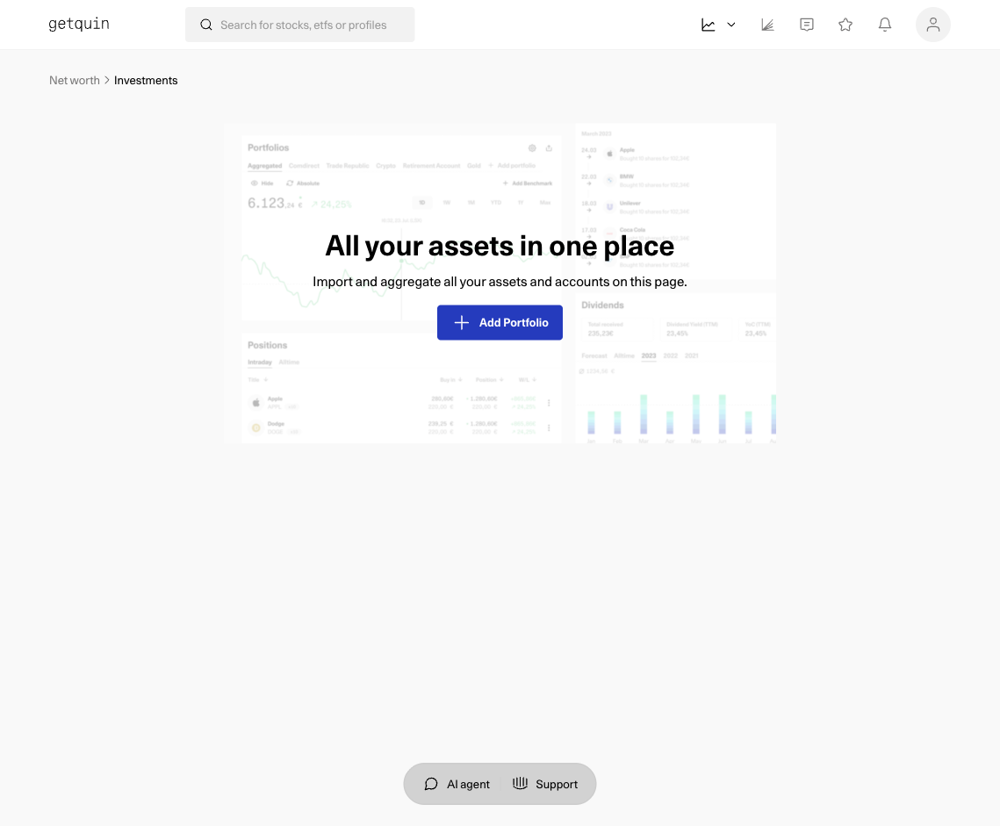
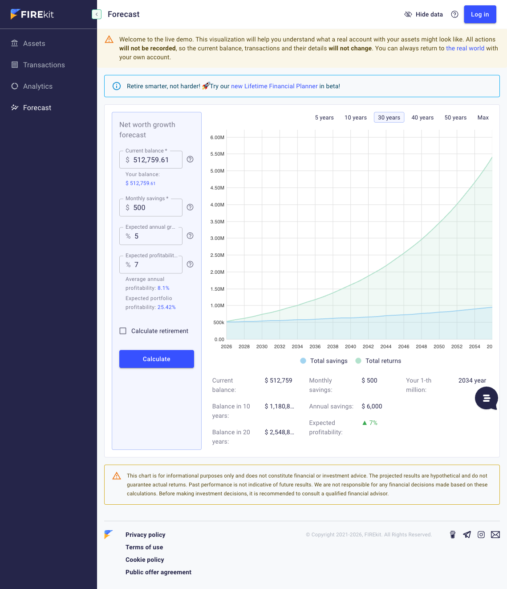
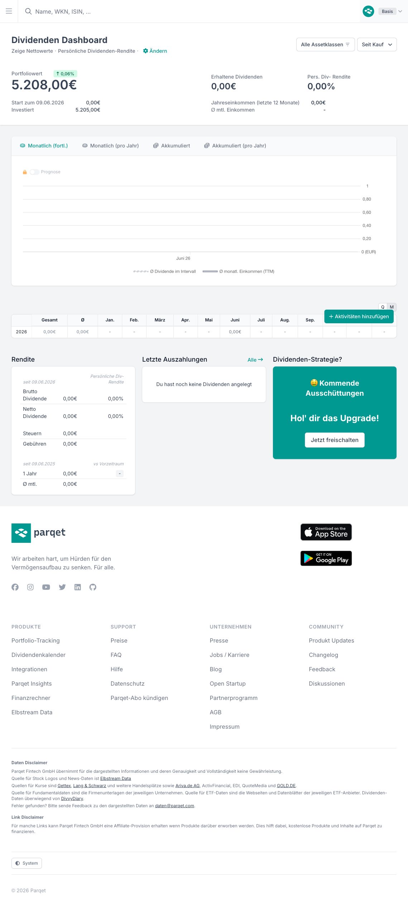
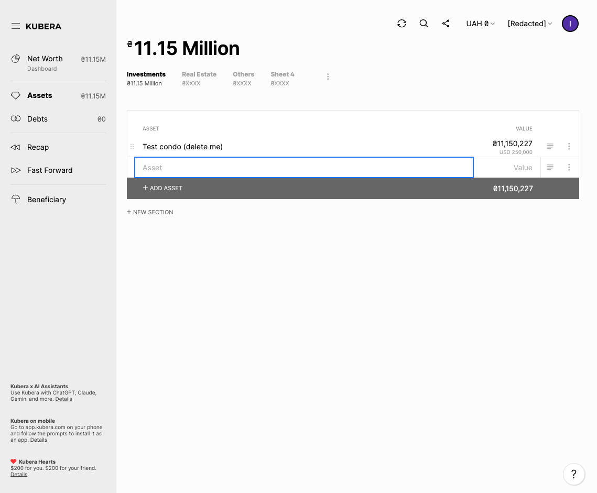
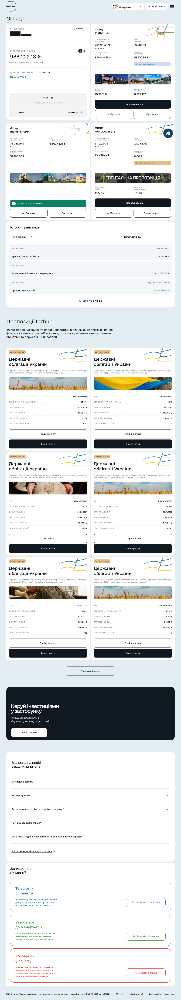

The design process in one place - from the competitive landscape and the make-or-break design dimension, through the beachhead survey and the personas it points to, to the screen architecture the product is built on. The research evidence behind the early sections lives in four source threads:
Goal. Validate the success hypothesis: investors who consolidate multi-source holdings into one income-focused view will prefer it to their spreadsheet - completing “understand my total position and this month’s income” faster, and rating clarity higher.
Condensed from the firsthand teardown; = verified in-product (Wealthfolio firsthand via desktop screen-capture), = verified on a desk/source claim, = paid, = inferred.
| Product | Asset coverage & one-view consolidation | Income & forward cash flow (our wedge) | Data-in | Multi-currency | Mobile | Trust / architecture |
|---|---|---|---|---|---|---|
| Parqet | Manual: securities incl. bonds, cash, crypto, metals, real estate, collectibles | Dividend dashboard + 12-mo forecast (free); detailed “upcoming distributions” calendar is paid - listed-dividend-centric | Import-first onboarding; file import = “PDF statement or CSV” only, broker-template based (not generic remap, not xlsx) | Display currency settable (seen as UAH); EUR prices + ECB FX | iOS/Android + web | DE-hosted, “never finances itself through your data” |
| getquin | Broad manual: Security/Crypto/Bond/Cash/Real Estate/NFT/Commodities/P2P | Dividend calendar + forecast (marketing) - listed only; couldn’t populate firsthand [?] | Working AI import - drag-drop any CSV/XLSX/PDF/DOC/JPEG/PNG, LLM-parsed | Display currency UAH | iOS/Android + web | Cloud + account + social feed |
| Sharesight Free | 700k+ instruments + bonds/metals; Income + Currency-gain first-class columns | Future Income report (to 3 yrs) - gated, “Upgrade to see” ; Income Calendar present | Broker sync + email-in + manual + CSV; tax-oriented, heavier | Base currency UAH works free; Multi-currency valuation report is paid | Web-first; app exists | Established, tax-grade; cloud + account |
| Kubera | Best-in-class breadth: banks, crypto, real estate, vehicles, metals + AI Appraiser; “just like a spreadsheet” | Anti-benchmark: pure balance sheet, no income column or forecast | Spreadsheet-like table; manual value updates saved as snapshot history | Best-in-class: enter any currency → stores native (USD 250,000) + shows converted (₴11,150,227) together | Web, responsive | Paid (~$249/yr), no data funnel |
| Inzhur | Excellent for Inzhur assets only (REIT, Energy, OVDP) - a single-platform silo | Shows income for its own instruments: all-time dividends (month/quarter/year), OVDP coupons/yield/maturity - mostly realized | In-platform only; 10-UAH min | Native ₴/$ toggle | Native iOS/Android + web | Trusted issuer; holds your money |
| FIREkit public demo | Broad & flexible: stocks, bonds, crypto, treasury, cash, deposits, real estate, even a car, with tags/goals | Tracks realized dividends/deposits/profit + TWR; no forward payout calendar - only forward view is a decades-out FIRE net-worth projection | Manual entry; instant public demo, no login ; CSV import [?] | Multi-currency + currency-distribution chart | Responsive web | Public no-login demo = low-friction; but cloud + account |
| Wealthfolio firsthand · desktop 3.5.2 | Securities-broad + alternatives (real estate, collectibles, private equity, liabilities); now spans Investments / Net Worth / Spending (PFM) . But the “Other Asset” form is value-only - no income schedule ; beachhead test: IR/IE mis-mapped to US stocks, OVDP ISIN priced at UAH 0 |
Realized dividends + interest only; Income page bars all past - no forward/projected, no payout calendar ; hero is value + performance (TWR/IRR) | Manual CSV wizard (5-step, auto-detect + per-column remap + saveable templates, isin→symbol) + AI chat import (import_csv LLM tool, BYOK to the user’s own OpenAI/Anthropic - needs their credits) ; self-contained SQLite backup + export |
Multiple currencies + FX; mixed UAH/USD in one ledger | Desktop verified firsthand; iOS + self-hosted web exist (not driven) | Strongest local-first: local SQLite, no account, no cloud by default ; AI is local-first too - on-device Ollama option + BYOK + per-category data-access toggles ; optional paid Connect = cloud by choice |
| Excel / Sheets | Unbeatable flexibility - any asset/field/schedule | No auto forward payout calendar; GOOGLEFINANCE pulls prices but no dividend data |
100% manual; every total by hand | Manual/brittle; no “rate on coupon date” | Weak on mobile | Maximal - file is yours, offline, no account |





The forward, blended, cross-asset payout calendar, one of Flows’ two leads, is the clearest gap: absent in the strongest consolidators (Kubera, FIREkit have no forward payout view ), paywalled where it exists for listed dividends (Sharesight, Parqet ), and never extended to coupons / rent / deposit interest / Inzhur payouts as first-class income. Even per-silo, Freedom24 shows realized dividends but explicitly cannot show upcoming ones .
The make-or-break dimension: replicate 100% of any real portfolio while spending far less effort than a spreadsheet. Studied against five non-finance exemplars (Airtable, Notion, Todoist, Apple Health, Attio). Key finding: no exemplar maxes both halves - coverage leaders (Notion/Airtable) make you design the structure; effort leaders (Apple Health/Attio) cap what you can represent. Flows has to do both at once.
Five structurally distinct patterns for the consolidated view were considered. The choice:
A vertical cascade: the hero carries this month’s income (realized + projected) alongside total position, then a by-type breakdown, with the payout calendar embedded as a module. Three reasons tied to our context:
Under condition X: if validation shows the dominant reason users open Flows is forward cash-flow (“how much income, and when”) rather than current position. Today position and income are co-equal leads, so the calendar is the emotional core embedded inside the summary frame, not the frame itself.
Structurally a net-worth/allocation device with no native place for forward income; it demands per-slice precision our manually-valued assets lack (false precision risks trust); it’s mobile-hostile; and it’s FIREkit’s allocation-analytics turf we avoid.
The make-or-break calls already made:
The first direct evidence from the beachhead. A 10-question survey (9 closed + 1 open, Ukrainian, no recruitment block) sent to the Inzhur community - N = 30, three days. Convenience sample, so directional, not statistical; Inzhur is over-represented by construction. Instrument: beachhead-survey.md · every raw response: beachhead-responses.md.
Q1 · multi-select · % of 30
Q2 · 3+ platforms for 70%
Q3 · ≤50% for 50% → genuinely spread
Q4 · primary method (some use several)
Q5 · phone leads, but desktop = 57%
Q6 · 57% weekly or more
Q7 · 87% track it; forward already leads
Q8 · trust = a filter, not a daily pain
Q9 · single choice · the named pain
A thin fourth signal points past the consolidated view: two open answers ask for an analytics / goals layer - "a calculator: how much to contribute per month to reach the desired result" (R26) and "statistical interpolation for the past and the future" (R23). Both are single voices (R26's own top difficulty is "I'm fine"), so this is a complementary want, not a felt pain - but it is the first direct beachhead signal for a derived analytics screen and a goal calculator on top of the position + income base.
Respondents also named the tools they use today - Strum (the closest direct competitor: Ukrainian, multi-asset, but no Inzhur certificates), plus firekit, Account Tracker, WiseWallet, Notion, Google Finance, and a self-built PowerBI report - a beachhead-sourced list to scan next. Full synthesis in research.md §6.
Behavioural personas, not demographic portraits: the research has no interviews, so we have how people act and choose, not deep why. Names, ages and photos are omitted because no demographic data was collected [?]. Evidence is tagged N=30 (beachhead survey, directional), desk (competitor / forum scan), or [?] where we have nothing. Full text: personas.md.
A multi-asset retail investor in the Inzhur community. Holds the universal core, Inzhur + OVDP (~95% each), plus a few of stocks/ETF, crypto, real estate, deposits (~3.6 types). Spread across 3+ platforms (70%), with no single platform holding the majority for most (≤50% share for 50%). Keeps everything in Excel or Sheets, the biggest method (40%) - for convenience and path-dependence, the shortest familiar path that grew organically, not distrust. Reviews weekly or more (57%).
Jobs.
Pains. Logging in across platforms to collect the numbers (R7); scattered assets + manual math + stale data (Q9); no app covers Inzhur certs / OVDP as anything but manual.
Trust triggers. Less manual labour is the real draw, not privacy (Q9 distrust 0%). Honest "as of" freshness and never showing a fabricated number matter more here than any privacy pitch, because broken sync and wrong numbers are what people actually abandon trackers over (§7.3).
Why primary. The success hypothesis and the comparative usability test both run against the participant's own Excel workflow; Excel is the biggest incumbent (Q4) and this persona carries the named adoption pain (R7). The product is validated against this person.
Holds few assets, often concentrated in one platform (for example everything in Inzhur) plus maybe one more they rarely open (a short, fixed-term crypto position). Consolidates nowhere because there is little to consolidate, not because they lack a tool (Q4: 20% nowhere; Q3: 27% hold >75% in one platform; first-hand beachhead self-report; §7.2).
Jobs. For most of this group, none that Flows serves yet: with little spread there is nothing to bring together. The real prospect is the subset outgrowing one platform, when a second or third holding appears.
Pains. For most, no acute pain; that is the point. For the growing subset, the moment a second platform appears is when "nowhere" stops working.
Has actually quit an app over account or data-access demands at least once (Q8: 37%), so trust is a real entry filter for them. But this is not why they are on Excel or nowhere: distrust is nobody's top daily pain (Q9: 0%), and in the wider scan privacy is a secondary churn reason, not a primary one (§7.3).
Jobs. Consolidate without handing the full picture to a cloud account; choose their own spot on the privacy-vs-convenience line (opt into sync for part of the portfolio, keep the rest local).
Pains. Mainstream apps are cloud + account by default; real-time auto-sync reads as a red flag. Honest caveat: this is an adoption filter, not a daily felt pain - 0% name distrust as the top difficulty and 50% are comfortable with bank/broker apps (Q8/Q9; §7.3).
Trust triggers. Local-first, no account, "never your balances", opt-in (not forced) sync, and on-device or BYOK AI so no server sees the data.
Each job is written as progress for the person, not a product feature: When [situation], I want [motivation], so I can [outcome]. Every job carries its persona and the evidence it grew from. Jobs nothing supports live in Hypotheses. Full text: jtbd.md.
From P1. Evidence: research goal; Excel is the biggest incumbent (Q4); fragmentation is real (Q2); income is tracked by most (Q7); the felt pain is the manual gathering (R7).
No social job is supported by the current research: the survey did not ask how people are seen by others, and no response touches it. Candidate social jobs are in Hypotheses below, marked [?], so they are not mistaken for findings.
Rows are jobs, columns are personas. A cell shows importance 1-3 (3 = high) and what confirms it. Only P1 has direct survey anchors (the modal respondent); for P2/P3, infer or a § ref marks importance reasoned from the persona, not measured. [?] is left blank, not averaged. P2 scores are for the bulk low-complexity group, who mostly do not need the product (§7.2).
| Job | P1 - Excel Consolidator (primary) | P2 - Low-Complexity Holder | P3 - Trust-Wary Abandoner | Function that closes it | Closed by competitors? |
|---|---|---|---|---|---|
| Main - whole position + income, no upkeep | 3 · Q4/R7/goal | 1 · §7.2 | 3 · infer | Consolidated view, two co-equal lenses (position + income) | No - nobody blends cross-silo incl. Inzhur/OVDP into one forward number (§1, §5) |
| RJ1 - bring the numbers together | 3 · R7 | 1 · §7.2 | 3 · infer | Auto-fetched prices (crypto/stocks + OVDP/Inzhur feeds), daily FX, opt-in sync | No for UA core - sync misses UA; Inzhur/OVDP feeds done by no one (§1, §6) |
| RJ2 - hold any asset I own | 3 · R8/§5 | 1 · §7.2 | 2 · infer | Flexible generic asset model: typed stubs + custom-field escape hatch | Partial - broad catalogs exist but Inzhur/OVDP unmodeled; only Excel is a true escape hatch |
| RJ3 - income coming + arrived | 3 · Q7 | 1 · §7.2 | 2 · infer | Forward income projection + realized auto-roll, blended | No / paywalled - gated (Sharesight, Parqet), listed-only; Kubera/FIREkit none (§5) |
| RJ4 - move in without redoing work | 3 · Q4 | 1 · Q4 | [?] | Move existing tracking in (auto-detect + remap), optional AI-assisted | Yes - getquin + Wealthfolio match CSV + AI import (§1, §4) |
| RJ5 - decide how much to share | 1 · Q9 | [?] | 3 · Q8/§7.3 | Local-first by default + opt-in sharing/sync; BYOK or on-device AI | Partial - only niche local-first tools (Wealthfolio, Ghostfolio) (§1, H4) |
| EJ1 - feel on top, not unsure | 3 · Q9 | 1 · §7.2 | 2 · infer | Consolidated view + honest "as of" / empty states | Partial - consolidation views exist but not for the UA core blend (§1) |
| EJ2 - feel my data is mine | 1 · Q9 | [?] | 3 · Q8/§7.3 | Local-first, no account, "never your balances" cues | Partial - Wealthfolio strongest local-first; Parqet privacy framing (§1) |
| EJ3 - feel my plan is working | 2 · Q7 | 1 · §7.2 | 2 · infer | Realized income to-date / track record | Yes - realized income common (Inzhur, FIREkit, Wealthfolio) (§1) |
The test is strict: high for the primary persona (P1 = 3) and not closed by the market. Three pass cleanly, and together they are the consolidation + automation + blended-income spine.
Runner-up, not in the three: RJ2 (hold any asset) is also P1 = 3 and the make-or-break flexibility dimension, but Excel already closes it, so it is table-stakes against the spreadsheet rather than a market gap. In scope as a must-have, not a wedge.
After building the personas, a targeted web scan tested three load-bearing assumptions. This is Western/global desk evidence (mostly tracker-vendor blogs, product reviews, forum posts), not the beachhead; directional only, with the survey still the authority. It moves four things.
Full follow-up with all sources: research.md §7.
The bridge from jobs to wireframes. Every screen is derived from an object a person handles in sitemap.md and traced to a job in jtbd.md - nothing is added because a finance app usually has it. Each screen below carries its primary persona (P1 primary, P3 secondary) and the job it helps close.
Global navigation is four tabs. The create action and the profile are deliberately not tabs.
Add (+) lives on the Overview screen, not in the nav: adding is occasional, not a recurring destination. Profile is a header entry point (create / log in / manage), the door to the opt-in account and My data & privacy; local-first means a user can do everything without opening it. Display currency and the EN↔UA language toggle are global-header controls, so there is no Settings tab.
Depth. Launch lands on Overview, whose hero carries total position and this-month's blended income together, so the main job sits 0 taps in for a returning user. The full income calendar, a single holding, Add, and Record changes are each 1 tap. The very first session routes through Get started instead of dropping the user on an empty dashboard.
Rows are every job in jtbd.md; columns are every screen above. A check means the screen genuinely helps close that job, not merely touches it. The target is no empty row (a job no screen serves) and no empty column (a screen no job needs).
| Job | DASH | CAL | ANL | GOAL | HD | CHG | PAY | ONB | ADD | MAN | IMP | MAP | REV | CONN | DATA |
|---|---|---|---|---|---|---|---|---|---|---|---|---|---|---|---|
| Main - whole position + income | ✓ | ✓ | ✓ | ||||||||||||
| RJ1 - bring the numbers together thin | ✓ | ✓ | ✓ | ✓ | |||||||||||
| RJ2 - hold everything I own | ✓ | ✓ | ✓ | ✓ | ✓ | ||||||||||
| RJ3 - income coming + arrived | ✓ | ✓ | ✓ | ||||||||||||
| RJ4 - move in without redoing work | ✓ | ✓ | ✓ | ✓ | ✓ | ||||||||||
| RJ5 - decide how much to share thin | ✓ | ✓ | |||||||||||||
| EJ1 - feel on top, not unsure | ✓ | ✓ | ✓ | ||||||||||||
| EJ2 - feel my data is mine thin | ✓ | ||||||||||||||
| EJ3 - feel my plan is working | ✓ | ✓ | ✓ | ✓ | ✓ | ✓ |
No empty row and no empty column: no screen-orphan, no job-orphan. Three rows are thin and watched before wireframes - RJ1 is closed mostly by background feeds rather than a screen of its own; RJ5's per-holding sharing has only a portfolio-level control today; EJ2 rests on the single My data & privacy screen. The former Language and Display-currency columns are gone: both are global-header controls, not screens.
Screen-to-screen flows for the load-bearing jobs, one per job, drawn for the primary persona (P1) unless noted. Both ends are shown on purpose - the success path and the dead-ends, not just the happy path. Full source: flows.md.
[ ]screen
[/ /]state of a screen
{ }decision
([ ])start / success
{{ }}dead-end
Three on-ramps (manual / import / connect) before any empty state; skip lands on an empty dashboard that repeats them, so the one dead-end is only reached by declining help twice.
flowchart TD
Start(["First launch, no holdings yet"]) --> Welcome["Get started"]
Welcome --> QHow{"How do you want to bring holdings in?"}
QHow -->|I have a spreadsheet| Imp["Import from a spreadsheet"]
QHow -->|I have a broker account| Conn["Connect an account / broker sync"]
QHow -->|add one by hand| Man["Add manually"]
QHow -->|skip for now| Empty[/"State: empty dashboard, on-ramps repeated"/]
Imp --> ImpNote(["continues in the RJ4 import flow"])
Man --> ManNote(["continues in the RJ2 add-manually flow"])
Conn --> ConnNote(["opt-in account, P3; no UA institution falls back to manual / CSV"])
ImpNote --> Done(["Holdings in, lands on populated dashboard: onboarding done"])
ManNote --> Done
ConnNote --> Done
Empty --> Dash["Consolidated dashboard"]
Dash --> QLater{"Pick an on-ramp now?"}
QLater -->|yes| QHow
QLater -->|no| Dead1{{"Dead-end: empty dashboard, user leaves for Excel"}}The dashboard is the 0-tap landing; a failed fetch falls back to the last-known value with an "as of" flag, never a fabricated number, and a session-open greeting surfaces income that landed while the user was away.
flowchart TD
Start(["Open Flows"]) --> Dash["Consolidated dashboard"]
Dash --> QHolds{"Any holdings yet?"}
QHolds -->|no| Empty[/"State: empty, no holdings"/]
Empty --> QStart{"Tap Add to start?"}
QStart -->|no| Dead1{{"Dead-end: blank screen, user goes back to Excel"}}
QStart -->|yes| Add["Add a holding"]
QHolds -->|yes| Load[/"State: loading, fetching prices + FX"/]
Load --> QTimeout{"Returned, or timed out / offline?"}
QTimeout -->|timed out / offline| Errf[/"State: error, fetch failed"/]
QTimeout -->|returned| QFresh{"Prices + FX returned?"}
QFresh -->|yes, all| Full[/"State: populated, total position + blended income"/]
QFresh -->|some failed| Partial[/"State: partial, priced holdings live + stale flags on the rest"/]
QFresh -->|no| Errf
Partial --> Full
Errf --> QLast{"Any last-known value?"}
QLast -->|yes| Stale[/"State: last-known value + as-of stale flag"/]
Stale --> Full
QLast -->|no| Neutral[/"State: neutral, no fabricated number"/]
Neutral --> Full
Full --> QArrived{"Payouts landed since last visit, or today?"}
QArrived -->|no| Win(["Sees whole position + what it pays: MAIN JOB met"])
QArrived -->|yes| Greet[/"State: greeting, income arrived while you were away: lists what landed"/]
Greet -->|looks right, dismiss| Win
Greet -->|that did not happen, I sold| ChgNote(["continues in the Record changes flow"])
Full -->|open Calendar| Calendar["Calendar"]
Full -->|tap a holding| Detail["Holding detail"]
Full -->|tap plus| AddAuto-detect straight to review is the happy path; remap is the safety net, and an unsupported file offers AI-assisted import or a manual add instead of a dead-end.
flowchart TD
Add["Add a holding"] -->|choose Import| Imp["Import from a spreadsheet"]
Imp --> Pick[/"State: pick or drop a CSV file"/]
Pick --> Parse[/"State: loading, parsing file"/]
Parse --> QParsed{"File readable with rows?"}
QParsed -->|no| Eparse[/"State: error, unreadable or empty"/]
Eparse --> QFmt{"Format supported, CSV or sheet?"}
QFmt -->|no| QAlt{"Try AI-assisted import, or add manually?"}
QAlt -->|AI import| AINote(["opt-in AI-assisted import, BYOK, separate flow"])
QAlt -->|add manually| Add
QFmt -->|yes| QRetry{"Retry or cancel?"}
QRetry -->|retry| Pick
QRetry -->|cancel| Add
QParsed -->|yes| QDetect{"Headers auto-detected?"}
QDetect -->|yes| Review["Review draft holdings"]
QDetect -->|no| Map["Map columns (remap)"]
Map --> QValid{"Required fields mapped?"}
QValid -->|yes| Review
QValid -->|no| QPresent{"Is that column even in the file?"}
QPresent -->|yes, remap| Emap[/"State: error, unmapped required column"/]
Emap --> Map
QPresent -->|no, not in file| Escape{"Fill it later, or add this one manually?"}
Escape -->|fill later| Review
Escape -->|add manually| Add
Review --> QRows{"Draft rows look right?"}
QRows -->|no, fix mapping| Map
QRows -->|some rows invalid| Erows[/"State: row errors flagged, fix or skip"/]
Erows --> Review
QRows -->|yes, confirm| Importing[/"State: loading, importing rows"/]
Importing --> Created[/"State: holdings created"/]
Created --> Dash["Consolidated dashboard"]
Dash --> Win(["Existing sheet moved in without re-entry: RJ4 met"])A month view: realized behind, projected (labeled) ahead; payouts past their date auto-roll to realized with no per-payout tap, and divergence hands off to Record changes.
flowchart TD
Dash["Consolidated dashboard"] -->|open Calendar| Inc["Calendar"]
Inc --> ILoad[/"State: loading, computing this month's projections"/]
ILoad --> QInc{"Any income-bearing holdings?"}
QInc -->|no| Eempty[/"State: empty, no projected income"/]
Eempty --> Qadd{"Add an income asset?"}
Qadd -->|yes| Add["Add a holding"]
Qadd -->|no| Dead1{{"Dead-end: empty calendar, user stays on Excel"}}
QInc -->|yes| QProj{"Projections + FX ready?"}
QProj -->|yes| Cal[/"State: populated month view, this month blended; back = realized, forward = projected (labeled)"/]
QProj -->|no| IErr[/"State: error, projection unavailable, shows last-known schedule"/]
IErr --> Cal
Cal -->|prev / next month| Month[/"State: another month, realized if past or projected (labeled) if future"/]
Month --> Cal
Cal --> QDue{"Any payout past its date?"}
QDue -->|no| Win1(["Sees what income is coming: RJ3 met"])
QDue -->|yes| Roll[/"State: past-due payout auto-rolled to realized, on the known schedule, no confirm step"/]
Roll --> Real[/"State: realized income, added automatically"/]
Real --> Win2(["Realized income adds up on its own: EJ3 met"])
Real -->|it did not happen, or paid differently| ChgNote(["continues in the Record changes flow"])
Cal -->|tap a holding| Detail["Holding detail"]
Detail --> QSched{"Holding has an income schedule?"}
QSched -->|yes| Cal
QSched -->|no| Gap[/"State: no income schedule, prompt to add one"/]
Gap --> QFix{"Add an income schedule now?"}
QFix -->|yes| Form["Add manually"]
QFix -->|no| Cal
Form --> CalTyped stubs cover the common ~90%; the custom-field escape hatch covers the rest, so no unmatched asset bounces the user back to Excel.
flowchart TD
Plus(["Tap +"]) --> Add["Add a holding"]
Add --> QHow{"How to add?"}
QHow -->|import| Imp["Import from a spreadsheet"]
QHow -->|connect| Conn["Connect an account / broker sync"]
QHow -->|manually| QType{"Asset type has a typed stub?"}
QType -->|yes| Form["Add manually"]
QType -->|no, odd asset| QEsc{"Use the custom-field escape hatch?"}
QEsc -->|no| Dead1{{"Dead-end: no matching type, user bounces to Excel"}}
QEsc -->|yes| Form
Form --> QClass{"Price-tracked type?"}
QClass -->|yes| QSym{"Symbol or ISIN found in feed?"}
QSym -->|yes| Auto[/"State: value auto-priced from feed"/]
QSym -->|no| Esym[/"State: error, symbol not found"/]
Esym --> QFallback{"Enter a manual value instead?"}
QFallback -->|no| Pending[/"State: saved with no value yet, shown neutral"/]
QFallback -->|yes| Manual[/"State: user enters value manually"/]
Pending --> Saved
QClass -->|no, manual type| Manual
Auto --> QSave{"Required fields complete?"}
Manual --> QSave
QSave -->|no| Eval[/"State: error, required field missing"/]
Eval --> Form
QSave -->|yes| Saved[/"State: holding created"/]
Saved --> Dash["Consolidated dashboard"]
Dash --> Win(["Odd asset recorded without leaving for Excel: RJ2 met"])
Imp --> ImpNote(["continues in the RJ4 import flow"])
Conn --> ConnNote(["opt-in, P3, off the beachhead path"])One screen reached from Overview or Calendar; it mirrors the dashboard's trust pattern at the single-holding level, and it is where P&L lives, kept off the dashboard hero.
flowchart TD
Enter(["Tap a holding, from Overview or Calendar"]) --> HD["Holding detail"]
HD --> QVal{"Price-tracked or manually-valued?"}
QVal -->|price-tracked| Load[/"State: loading, fetching value + history"/]
Load --> QHist{"Value + history returned?"}
QHist -->|yes| Full[/"State: populated, value + 30-day change + history + income schedule + P&L"/]
QHist -->|fetch failed| Err[/"State: error, last-known value + as-of stale flag"/]
QHist -->|no history yet| Neutral[/"State: neutral, no 30-day change fabricated"/]
QVal -->|manually-valued| QSnap{"Any user snapshots yet?"}
QSnap -->|yes| Full
QSnap -->|no| Neutral
Full --> Done(["Sees one holding in full"])
Err --> Done
Neutral --> Done
Full -->|make a change| EditNote(["this holding, pre-scoped: continues in the Record changes flow"])
Full -->|no income schedule| SchedNote(["prompt to add a schedule, continues in the RJ3 income flow"])The persistent safety valve for what automation can't see (bought more, sold, a payout that didn't land), in bulk or per holding, and type-aware so it never asks about fields the asset lacks.
flowchart TD
Entry(["Something changed we did not auto-detect"]) --> QWhere{"Where from?"}
QWhere -->|Overview, persistent Make changes| Hub["Record changes"]
QWhere -->|Holding detail, this holding| HubOne["Record changes (one holding, pre-scoped)"]
Hub --> QScope{"All holdings, several, or one?"}
QScope -->|one| HubOne
QScope -->|several / all, in bulk| Bulk[/"State: pick the holdings to change together"/]
HubOne --> QType{"What changed? (options depend on asset type)"}
Bulk --> QType
QType -->|bought more / sold: quantity| EditH["Add manually (edit mode)"]
QType -->|value correction| EditH
QType -->|a payout did not happen / wrong amount| EditP["Payout edit"]
EditH --> Save[/"State: saving the change"/]
EditP --> Save
Save --> QSaved{"Saved?"}
QSaved -->|no| Err[/"State: error, save failed, retry"/]
Err --> QType
QSaved -->|yes| Done[/"State: holdings + income updated, picture back in sync"/]
Done --> Win(["Picture matches reality again: upkeep stays low, EJ3 stays honest"])Both compute on holdings already entered; neither adds data. Analytics is read-only and its only failure is the empty state before any holding exists. Goals is a scenario tool seeded from the user's own history, and every projected figure is labeled an estimate, never a promise.
flowchart TD
A(["Open Analytics, from nav"]) --> ALoad[/"State: loading, computing from holdings + snapshots"/]
ALoad --> AQ{"Any holdings yet?"}
AQ -->|no| AEmpty[/"State: empty, nothing to analyze, prompt to add"/]
AEmpty --> AAdd(["go to Add a holding"])
AQ -->|yes| AFull[/"State: populated, allocation + income by source + P&L + trends over time"/]
AFull --> AWin(["Sees how the portfolio is doing: EJ1 + EJ3"])
AFull -->|tap a holding| AHD(["Holding detail"])flowchart TD
G(["Open Goals, from nav"]) --> GQ{"Enough history to seed defaults?"}
GQ -->|no| GSeed[/"State: ask for a target + a starting contribution, no history to default from"/]
GQ -->|yes| GDefault[/"State: defaults from history, average monthly contribution + current payouts"/]
GSeed --> GCalc["Goals / Calculator"]
GDefault --> GCalc
GCalc --> GEdit{"Adjust target or assumptions?"}
GEdit -->|yes| GCalc
GEdit -->|no| GEst[/"State: projection shown, labeled estimate, never a promise"/]
GEst --> GWin(["Sees what it would take to reach the goal: EJ3 (thin, HJ3)"])Two screens have no flow drawn yet, on purpose: Connect an account / broker sync and My data & privacy. Both serve the trust-wary, automation-leaning persona (P3), off the primary Excel-consolidator path; they are deferred rather than omitted so the gap stays explicit.